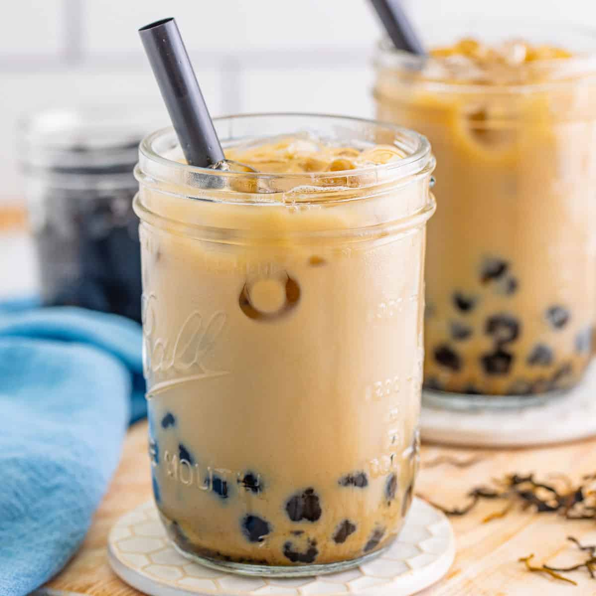

Bubble Tea
|  |
Bubble tea is very popular, especially to Asians, but now, more and more people from different backgrounds like the taste of it. Just be patient and look for them in Chinese grocery stores. It's simple but some of the ingredients may be a little tough to find. I'm no expert at this, but I do know how to make it. It is worth the trouble! |
|---|
Ingredients
- 1 teaspoon brown sugar
- ⅓ cup pearl tapioca
- 1 cup brewed black tea
- 2 tablespoons milk
- 4 teaspoons brown sugar
- 1 cup ice cubes
Steps
- In a small saucepan, bring 2 cups water to a boil.
- Stir in 1 teaspoon sugar until it dissolves.
- Toss in the pearl tapioca. Cook for about 20 minutes.
- Rinse, drain, and refrigerate until chilled.
- Pour tea, milk, and 4 teaspoons sugar into a cocktail shaker.
- Stir until the sugar has dissolved and the milk is well mixed in.
- Add the ice cubes, and shake so the whole drink can get cold.
- Pour into a glass, and add tapioca.